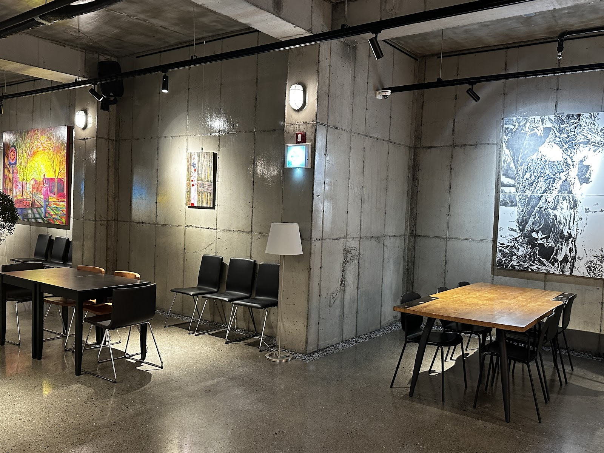

Cafe Arae Heon: A Hanok-Style Cafe Stop in Gyeongju
At a glance: Cafe Arae Heon is a cafe at 181 Bobul-ro in Gyeongju, South Korea. Korean-language travel coverage describes it as a hanok-style cafe, making it a possible stop for visitors looking for a quieter break from sightseeing. Google currently lists it at 4.9 out of 5 from 1,388 reviews. Check current details before setting out, as opening hours and other practical information can change.
A change of pace from sightseeing
Gyeongju is known for its historic sites, but a good trip also leaves room to pause between visits. Cafe Arae Heon offers a reason to build in that breathing space. Its name is often written in English as “Cafe Arae-Heon,” and Korean-language travel posts describe it as a traditional Korean-style, or hanok-style, cafe. That makes it a natural choice for travelers curious about architecture and atmosphere as well as coffee.
A hanok-inspired setting can feel quite different from a contemporary high-street cafe: the architecture and surroundings become part of the visit. Online descriptions also mention a garden-like setting and nearby waterside scenery. Treat those details as a general impression rather than a guarantee of a particular view; what you see may depend on the weather, season, and where you are seated. If the setting is your main reason for visiting, check recent photos and visitor updates before you go.
The cafe is at 181 Bobul-ro, Gyeongju, Gyeongsangbuk-do. Rather than assuming it is convenient to reach on foot from a particular attraction, check the route from your actual starting point. Bobul-ro is a useful address to enter directly into a map app, especially if you are traveling across the wider Gyeongju area.
What to expect
Think of Arae Heon as a place to take a considered break, not as a sightseeing attraction with a fixed itinerary. You can make it a pause during a day of exploring, or visit when you want a change of scenery from the city’s busier areas. Its traditional-cafe character may appeal to travelers who enjoy taking in the setting slowly, photographing architectural details, or simply sitting down between stops.
There is not enough dependable information here to promise particular menu items, prices, seating arrangements, or facilities. If you have dietary requirements, need step-free access, are traveling with a pet, or have another specific need, contact the cafe or check its latest business information before making the trip. The same applies if you are planning around a tight schedule.
Google’s current listing gives Cafe Arae Heon a rating of 4.9 from 1,388 reviews. That is a strong signal of visitor satisfaction, but ratings can change and do not guarantee that every visit will be the same. Recent comments and photos are useful for checking the atmosphere and any changes that matter to your plans.
Planning your visit
Before leaving, confirm that the cafe is open on the day you plan to visit. Search results and travel posts may show hours, but those can be outdated or vary by season; no opening schedule is confirmed here. Check the latest map listing or contact the business directly rather than relying on an old blog post.
For navigation, use the street address rather than searching only for the English spelling, since the cafe’s name may appear differently across map services. The Google Maps link below opens the place listing. If you use a Korean navigation app, searching for 아래헌 may help. Allow time for your chosen route and check travel conditions independently; no particular transport option or journey time is guaranteed.
Travelers who want to plan around a specific dish or drink should look for a current menu before visiting. Likewise, confirm payment options and parking directly if either is important to you. These simple checks are especially useful when traveling outside major city centers, where information in English may be limited.
Good to know
- Address: 181 Bobul-ro, Gyeongju, Gyeongsangbuk-do, South Korea.
- Google rating: 4.9/5 from 1,388 reviews at the time of writing; ratings and review totals can change.
- Style: Korean-language travel coverage describes the cafe as hanok-style. Treat descriptions of garden or waterside scenery as indicative, not guaranteed.
- Check before you go: Current opening hours, menu, prices, access, parking, and other facilities.
- Useful search term: 아래헌 (Arae Heon in Korean).
Useful links
- Cafe Arae Heon on Google Maps
- Naver search for 아래헌 — a search page for current Korean-language information, not a standalone cafe website.
FAQ
Is Cafe Arae Heon a traditional Korean cafe?
Korean-language travel coverage describes it as a hanok-style cafe. Check recent photos if you want to confirm its current appearance before visiting.
What is the address of Cafe Arae Heon?
It is listed at 181 Bobul-ro, Gyeongju, Gyeongsangbuk-do, South Korea. Use the Google Maps link above for navigation.
Do I need to check opening hours before going?
Yes. Hours can change, and none are confirmed here. Check the latest listing or contact the cafe on the day of your visit.